The ggplot2 package is the probably the most widely used package for producing elegant visualizations in r. There are extensive resources available online from the creators of ggplot2.
Visualizing Data with ggplot2
Basics
Install & load ggplot2()
install.packages("ggplot2")
library(ggplot2)Practice data
The mtcars dataset is part of the base R package, and is the daataset that we will use to explore ggplot2.
| mpg | cyl | disp | hp | drat | wt | qsec | vs | am | gear | carb | |
|---|---|---|---|---|---|---|---|---|---|---|---|
| Mazda RX4 | 21.0 | 6 | 160 | 110 | 3.90 | 2.620 | 16.46 | 0 | 1 | 4 | 4 |
| Mazda RX4 Wag | 21.0 | 6 | 160 | 110 | 3.90 | 2.875 | 17.02 | 0 | 1 | 4 | 4 |
| Datsun 710 | 22.8 | 4 | 108 | 93 | 3.85 | 2.320 | 18.61 | 1 | 1 | 4 | 1 |
| Hornet 4 Drive | 21.4 | 6 | 258 | 110 | 3.08 | 3.215 | 19.44 | 1 | 0 | 3 | 1 |
| Hornet Sportabout | 18.7 | 8 | 360 | 175 | 3.15 | 3.440 | 17.02 | 0 | 0 | 3 | 2 |
| Valiant | 18.1 | 6 | 225 | 105 | 2.76 | 3.460 | 20.22 | 1 | 0 | 3 | 1 |
Sample plot
Use the following code to make a scatterplot of horsepower(hp) x miles per gallon(mpg).
ggplot(data=mtcars,mapping = aes(x=hp, y=mpg))+
geom_point()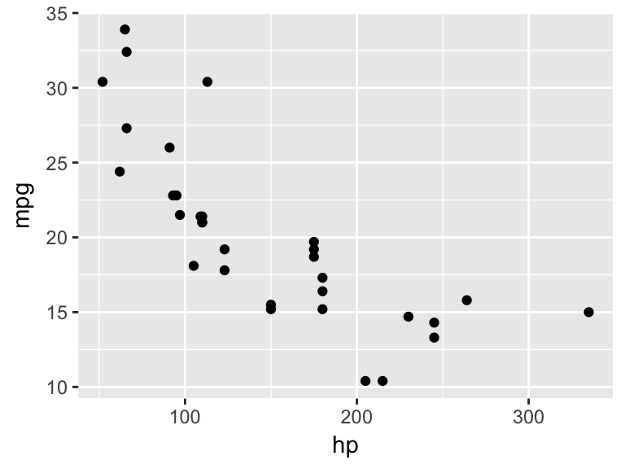
Basic commands & necessary arguments.
- We initiate a plot with the ggplot() command.
- Then, we include a geom command to define the geometric objects that we will use to visualize the data.
- These two commands are joined together by a “+”
There are two major arguments which must be defined within each ggplot & geom command, otherwise they will not produce any output.
data=
- This is where you will define the data that is to be referenced by the plot(s).
mappings=
- This is where you will define the visual properties, or aesthetic mappings, of the plot(s).
Placement of the data= and mapping= arguments
- You can place both arguments within the top-level ggplot() command. This will tell ggplot to apply this data & aesthetic mapping to all geoms that follow.
Notice that both the point geom, and the line geom are illustrating the same thing (hp x mpg).
ggplot(data=mtcars,mapping = aes(x=hp, y=mpg))+
geom_point()+
geom_line()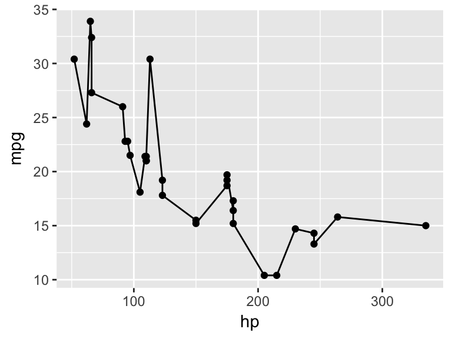
- You can place the arguments within each geom() command. This will tell ggplot to apply this data & aesthetic mapping only to this geom.
Notice below that the geom_line is not plotted, because there is no data & no aesthetic mapping defined
ggplot()+
geom_point(data=mtcars,mapping = aes(x=hp, y=mpg))+
geom_line()
- You can pass the data= argument at the ggplot() level, and the aesthetic mapping argument at the geom level. This results in all geoms using the same data, but each geom having uniquely defined aesthetic mappings.
Notice below that geom_point() shows horsepower by miles per gallon, while geom_line() shows horsepower by quarter mile time.
ggplot(data=mtcars)+
geom_point(mapping = aes(x=hp, y=mpg))+
geom_line(mapping = aes(x=hp, y=qsec))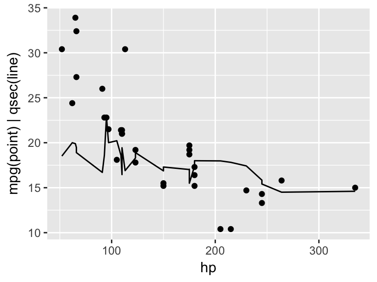
Aesthetics
Aesthetics “aes()” describe the visual properties related to the x and y values. Some commonly used aesthetic properties are:
x-axis value (required)
y-axis value (required)
color(outline)
fill
alpha (transparency)
size
shape
Data-defined vs. Manually-defined Aesthetics
Any mapping arguments inside of the aes() command are tied to the data. Mapping arguments outside of the aes() command pertain to the entire geom, or ggplot object.
Example(Left): Cars with Manual transmission are colored blue. Size indicates number of cylinders.
ggplot(data=mtcars)+
geom_point(aes(x=hp, y=mpg, color=am,size=cyl))Example(Right): Size indicates number of cylinders, however all points are blue since color is not tied to values in the data. Again, this is achieved by putting the color argument outside of the aes() command.
ggplot(data=mtcars)+
geom_point(aes(x=hp, y=mpg,size=cyl),color="blue")
Contiuous vs. Categorical values
Notice that we have a color scale legend for the am variable. That is because it is being treated like a continuous variable. We can convert it to a factor with the as.factor() command in order to have it treated categorically.
Example(Left): “am” treated as a continuous variable
ggplot(data=mtcars)+
geom_point(aes(x=hp, y=mpg, color=am,size=cyl))Example(Right): “am” converted to factor and treated as a categorical variable.
ggplot(data=mtcars)+
geom_point(aes(x=hp, y=mpg, color=as.factor(am),size=cyl))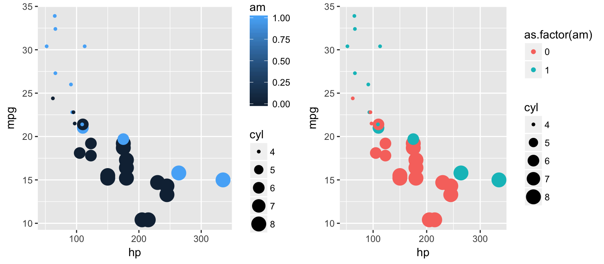
Note: repeating the “as.factor()” command can make for bulky code very quickly. If we will be consistently treating “cyl” and “am” as factors, we can define a new dataframe and re-classify these variables the way we want them.
library(dplyr)
newmtcars <- mtcars%>%
mutate(cyl = as.factor(cyl),
am = as.factor(am))
ggplot(data=newmtcars)+
geom_point(aes(x=hp, y=mpg, color=am,size=cyl, shape=am))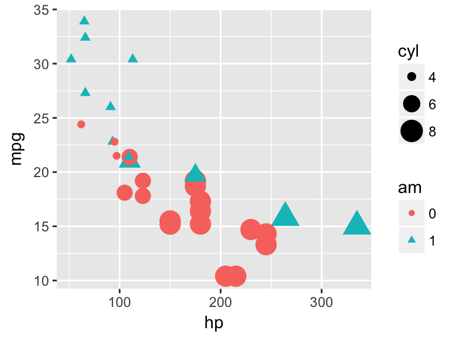
Color & Fill
- color refers to the outline of a geometric object
- fill* refers to the color that covers the surface area of an object.
Example(Left): “color”
ggplot(data=newmtcars)+
geom_bar(aes(x=am, color=am))Example(Right): “fill”
ggplot(data=newmtcars)+
geom_bar(aes(x=am, fill=am))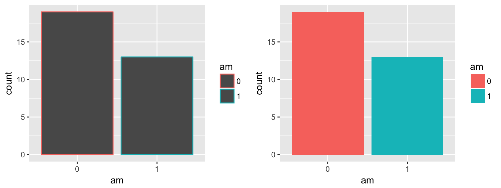
aes(x=x,y=y, color=color) vs. aes(x=x,y=y),color=color
Example(Left): When color/fill is defined inside of the aes() command, the color/fill assignments will correspond to the data.
ggplot(data=newmtcars)+
geom_bar(aes(x=am, fill=am))Example(Right): When color/fill is defined outside fo the aes() command, the color/fill assignment applies to the entire plot & is manually-defined.
ggplot(data=newmtcars)+
geom_bar(aes(x=am), fill="aquamarine1")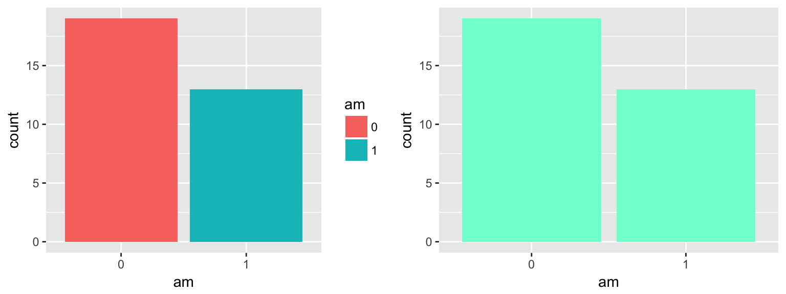
Here is a great reference for colors that are recognized by name in r.
Position
There are arguments that can be added to ggplot() to adjust the position of your geoms.
position=“jitter”
position=“fill”
position=“dodge”
position=“stack”
position=“identity”
Position = “jitter”
The “jitter” position adds some random noise to each point, which is especially useful when there might be many points overlapping eachother which would be otherwise hidden. This is not advised when the points need to be observed with precision.
Example(Left): # of cylinders by # of city miles without the “jitter” positioning.
ggplot()+
geom_point(data=mtcars, aes(x=cyl, y=mpg))Example(Right): # of cylinders by # of city miles with “jitter” positioning. Notice how many points are now visible.
ggplot()+
geom_point(data=mtcars, aes(x=cyl, y=mpg),position="jitter")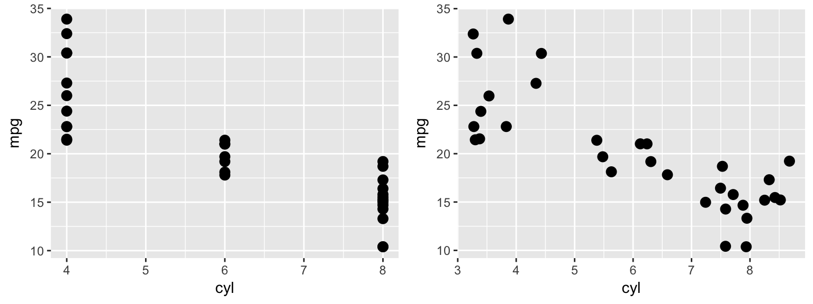
You can define how much noise is applied to each point by using the position=position_jitter() command in place of the default position=“jitter” argument.
ggplot(data=mtcars)+
geom_point(aes(x=cyl, y=mpg),position=position_jitter(w = 0.1, h = 0.1))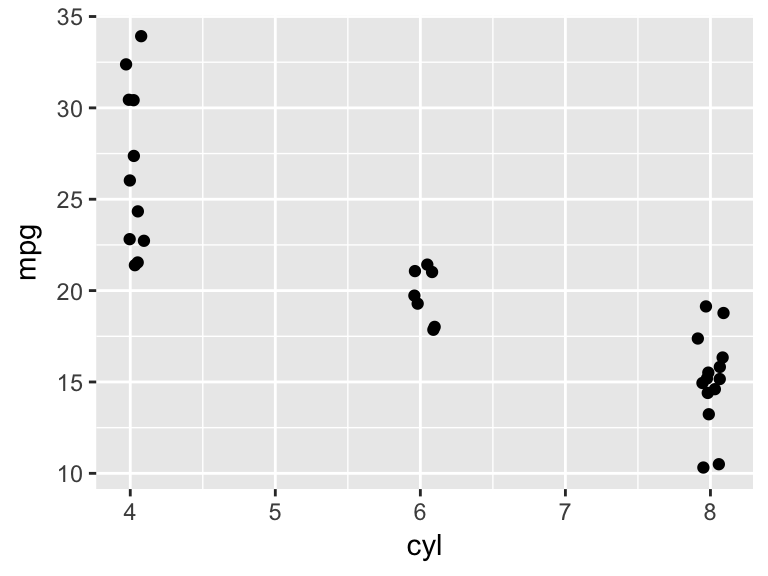
Position=“fill”
The fill position tells ggplot to fill the full plot area, useful for illustrating proportions.
Example(Left): Vehicle count by # of cylinders, with color to dinstinguish by transmission type.
ggplot(mtcars)+
geom_bar(aes(x= factor(cyl), fill = factor(am)))Example(Right): Proportion of vehicles with manual vs automatic transmissions by # of cylinders. Proportion is much more easily distinguished here.
ggplot(mtcars)+
geom_bar(aes(x= factor(cyl), fill = factor(am)), position = "fill")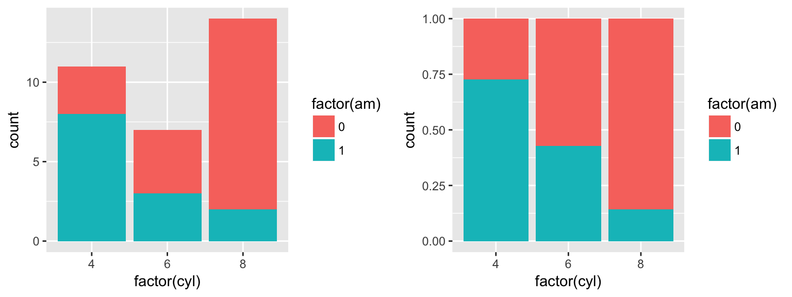
Position=“dodge”
The “dodge” position shifts objects horizontally to make sure that they are not overlapping.
Example(Left): Without the “dodge” argument, geom_bar takes on the it’s default position=“stack”.
ggplot(mtcars, aes(factor(cyl), fill = as.factor(am))) +
geom_bar()Example(Right): With “dodge” argument, counts for each transmission type appear side by side on the x-axis according to their number of cylinders.
ggplot(mtcars, aes(factor(cyl), fill = as.factor(am))) +
geom_bar(position = "dodge")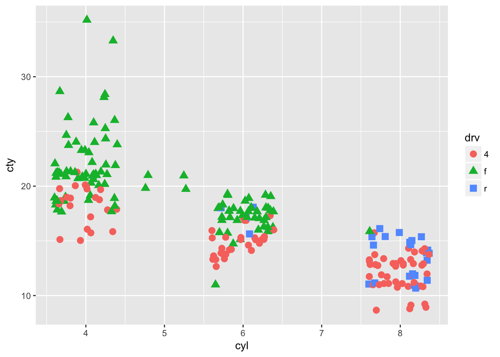
Position=“stack”
Position=“identity”
Size
You can manually or dynamically assign size values to your points.
Example(Left):Size manually assigned (outside of the aes() command).
ggplot()+
geom_point(data=mtcars, aes(x=cyl, y=mpg, color=cyl),size=5, position="jitter")Example(Right):Size dynamically assigned (inside of the aes() command).
ggplot()+
geom_point(data=mtcars, aes(x=cyl, y=mpg, color=cyl, size=cyl),position="jitter")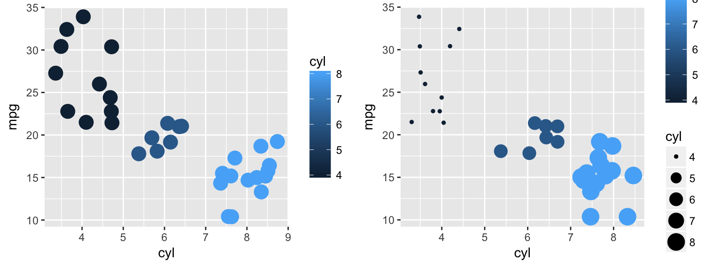
Shape
Your points can take on various shapes which can, again, be assigned manually or dynamically.
Example(Left):Shape manually assigned (outside of the aes() command).
ggplot(mtcars)+
geom_point(aes(x=cyl, y=mpg),shape=3, position="jitter")Example(Right):Shape dynamically assigned (inside of the aes() command).
ggplot(data=mtcars)+
geom_point(aes(x=cyl, y=mpg, shape=factor(cyl)), position="jitter")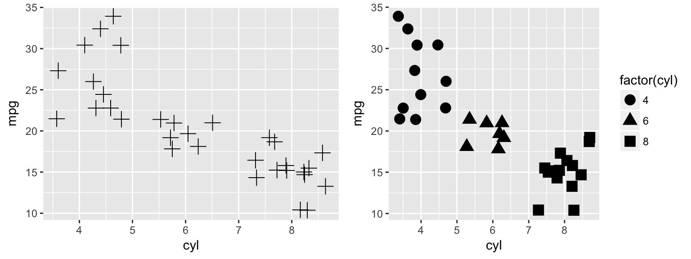
The numeric assignments of each primary shape for manual selection are as follows.

Geoms
Geoms refer to the geometric objects that will represent your data in a plot. Below are some of the geoms available in ggplot2.
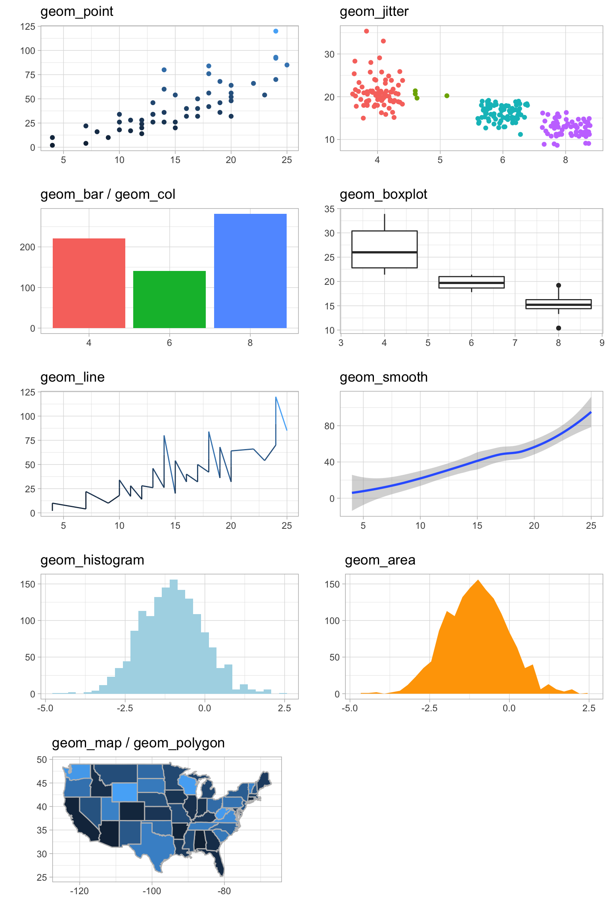
geom_point
ggplot(mtcars)+
geom_point(aes(x=hp, y=mpg))
geom_bar & geom_col
Example(Left):geom_bar uses stat=“count” as its default, plotting the frequencies of each x-axis value.
ggplot(starwars)+
geom_bar(aes(x=gender))Example(Right):geom_col uses stat=“identity” as its default, plotting the summed y-values for each x-value.
ggplot(starwars)+
geom_col(aes(x=gender, y=height, fill=gender))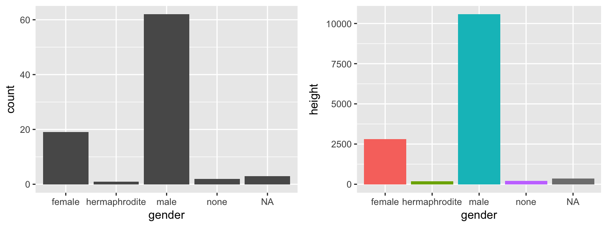
geom_histogram
ggplot(mtcars)+
geom_histogram(aes(x=hp))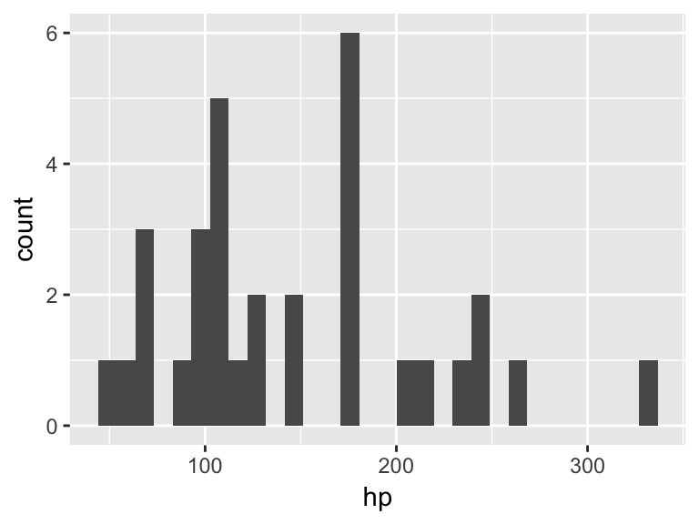
geom_line & geom_smooth
Example (Left): geom_line
ggplot(mtcars)+
geom_line(aes(x=hp, y=mpg))Example (Right): geom_smooth
ggplot(mtcars)+
geom_smooth(aes(x=hp, y=mpg))
geom_boxplot
ggplot(mtcars)+
geom_boxplot(aes(x=am, y=mpg, group=am))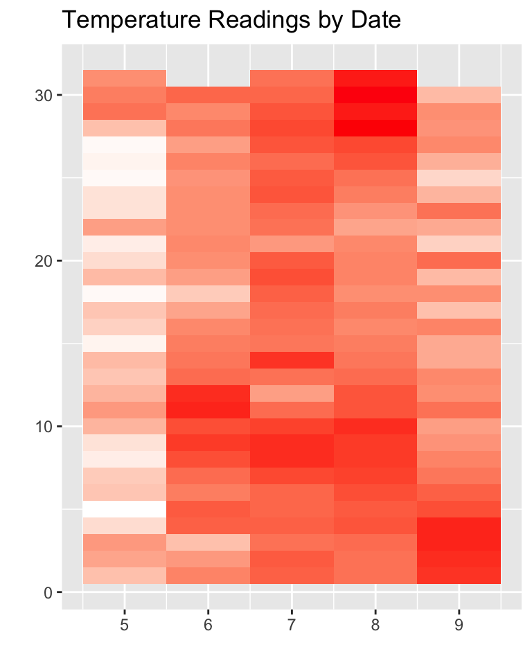
geom_text
Theme Elements
theme(line, rect, text, title, aspect.ratio, axis.title, axis.title.x,
axis.title.x.top, axis.title.y, axis.title.y.right, axis.text, axis.text.x,
axis.text.x.top, axis.text.y, axis.text.y.right, axis.ticks, axis.ticks.x,
axis.ticks.y, axis.ticks.length, axis.line, axis.line.x, axis.line.y,
legend.background, legend.margin, legend.spacing, legend.spacing.x,
legend.spacing.y, legend.key, legend.key.size, legend.key.height,
legend.key.width, legend.text, legend.text.align, legend.title,
legend.title.align, legend.position, legend.direction, legend.justification,
legend.box, legend.box.just, legend.box.margin, legend.box.background,
legend.box.spacing, panel.background, panel.border, panel.spacing,
panel.spacing.x, panel.spacing.y, panel.grid, panel.grid.major,
panel.grid.minor, panel.grid.major.x, panel.grid.major.y, panel.grid.minor.x,
panel.grid.minor.y, panel.ontop, plot.background, plot.title, plot.subtitle,
plot.caption, plot.margin, strip.background, strip.placement, strip.text,
strip.text.x, strip.text.y, strip.switch.pad.grid, strip.switch.pad.wrap, ...,
complete = FALSE, validate = TRUE)References
H. Wickham. ggplot2: Elegant Graphics for Data Analysis. Springer-Verlag New York, 2009.
Questions & Feedback
Please feel free to leave feedback that could help improve this site. If you have questions, please leave them below as well and I will do my best to support you as soon as possible.